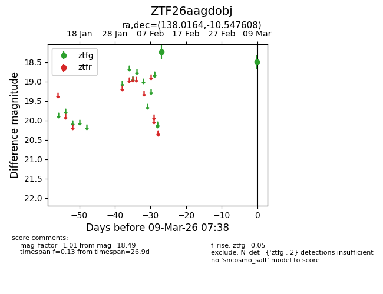
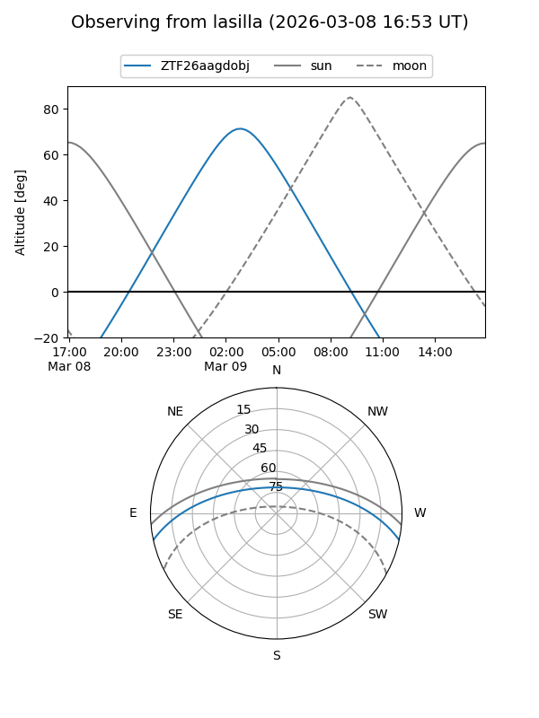
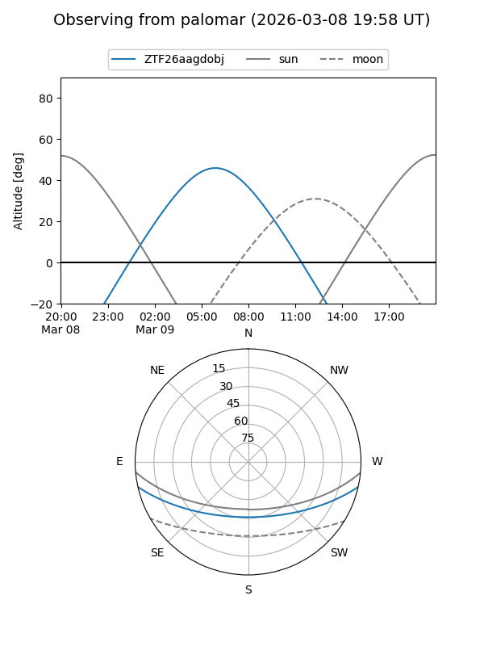

ZTF26aagdobj
Target ZTF26aagdobj at 2026-03-09 07:39
Aliases and brokers:
FINK: link
Lasair: link
ALeRCE: link
alt names
ZTF26aagdobj (ztf,fink_ztf)
Coordinates:
equatorial (ra, dec) = 138.0164,-10.54761
equatorial (HMS+DMS) = 09:12:03.93,-10:32:51.39
galactic (l, b) = (240.5792,+24.85623)
Flags:
Photometry:
last ztfg=18.49
2 ztfg detections
Lightcurve

Visibility


Additional plots